Imizu, Toyama: things to do, food and stays
Imizu · Toyama
Imizu
Highlighted on the Toyama map.

Stay
AKAMA富山

AKAMA Toyama
第一イン新湊
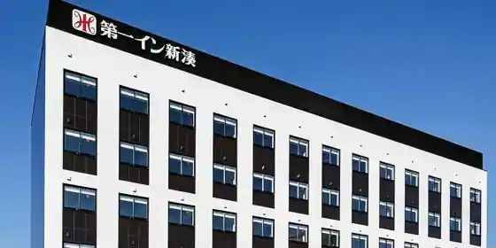
Daichi Inn Shinminato
ホテルルートイン射水
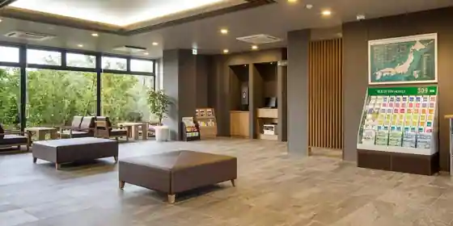
Hotel Route Inn Imizu
Hotel at Betsukomyosekijinko Onsen in Honkaihatsu, Imizu with a large communal bath.
天然温泉 東風の湯 スーパーホテル富山・射水
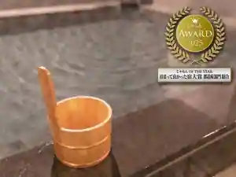
Tennen Onsen Higashikaze No Yu Super Hotel Toyama Imizu
Hotel in Sanke, Imizu with buffet meals and breakfast available.
Dining
割烹かわぐち
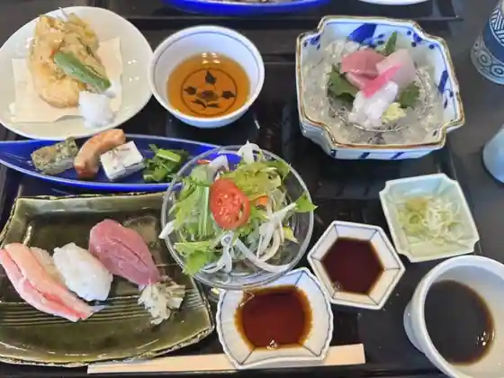
Kappo Kawaguchi
浪花鮨 本店
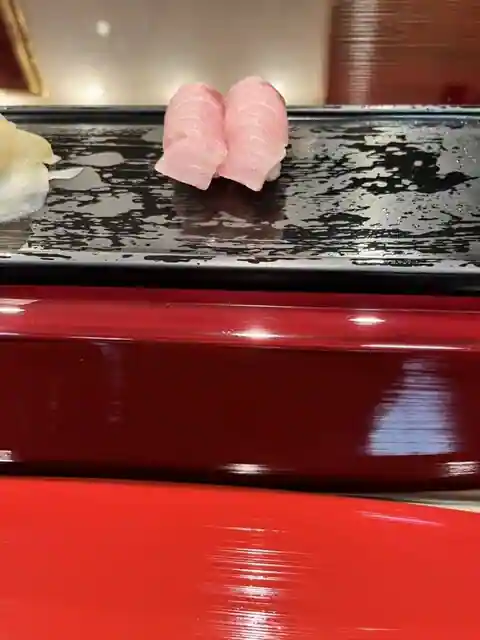
Naniwa Sushi Hon
きときと食堂
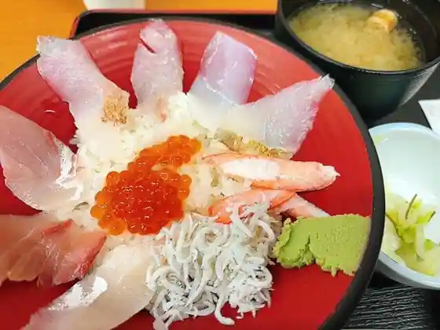
Kitokito Shokudo
番やのすし 小杉店
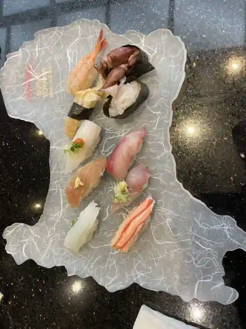
Ban Yanosushi Kosugi
インド･パキスタン料理 ホット・スプーン
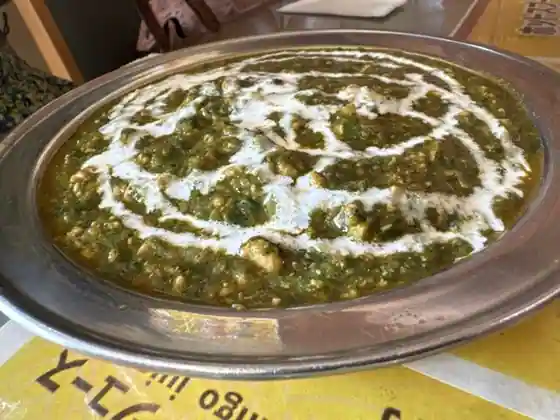
Indo Indo Pakisutan Ryori Hotto Supun
らーめん キラリ
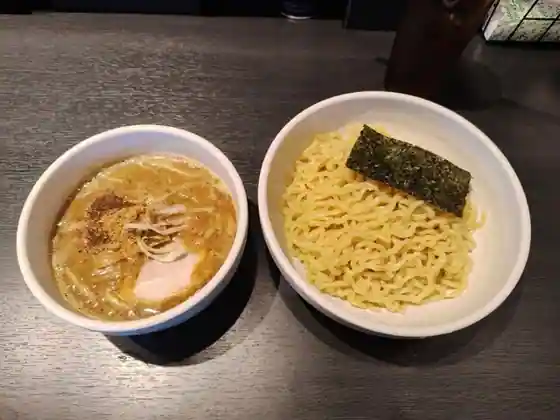
Ramen Kirari
patisserie Le Coeur
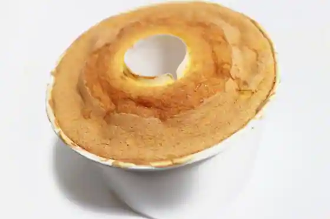
patisserie Le Coeur
uchikawa六角堂

uchikawa Rokkaku Do
めん八 小杉本店
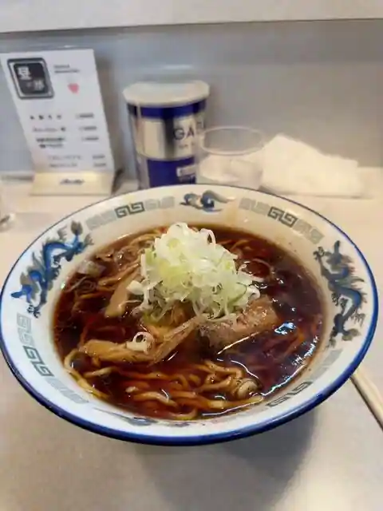
Men Hachi Kosugi Hon
麺家いろは 射水本店
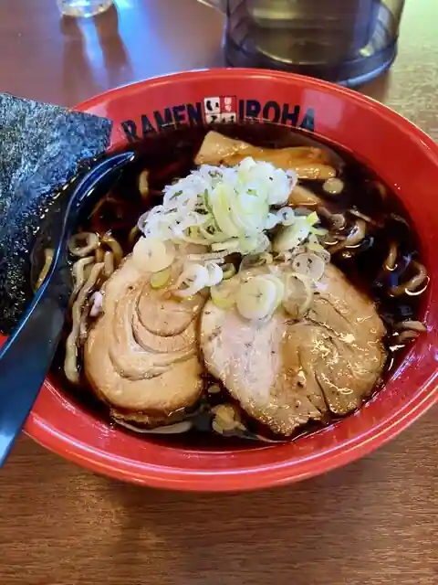
Men Ie Iroha Imizu Hon
グリル はやし
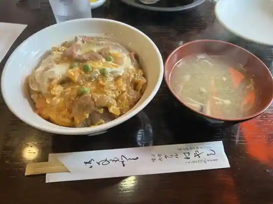
Grill Hayashi
らーめん てしお
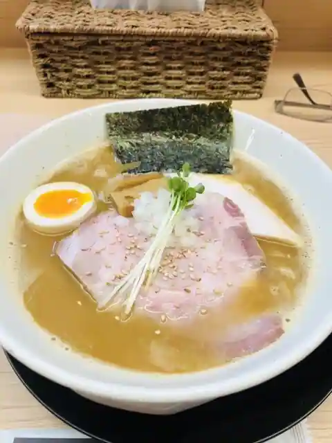
Ramen Teshio
きっときと亭
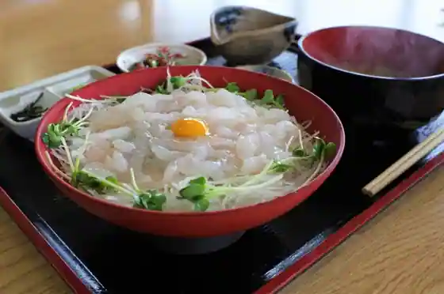
Kittokito Tei
はつ花
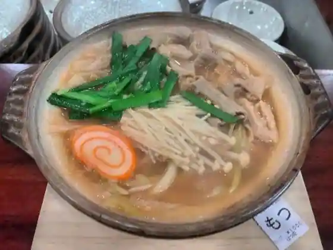
Hatsu Hana
ラーメン工房
Ramen Kobo
ひさみなと食堂
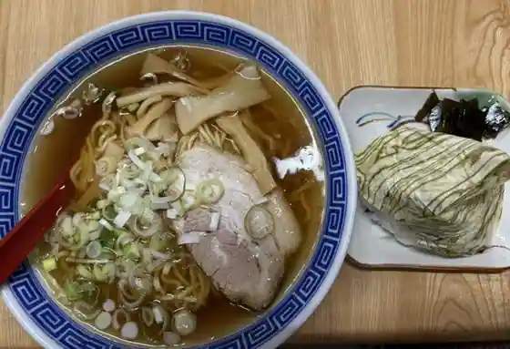
Hisaminato Shokudo
新湊漁港 かに小屋
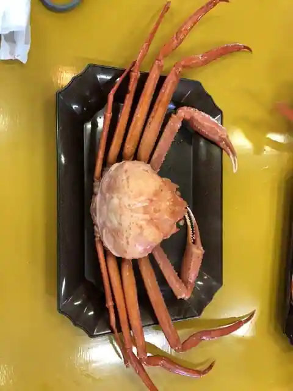
Shinminato Gyoko Kani Koya
インド・パキスタン料理 アルバラカ
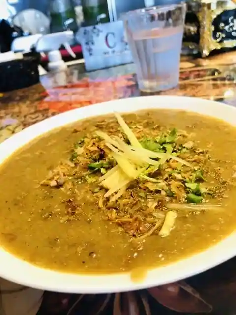
Indo Pakisutan Ryori Arubaraka
李白
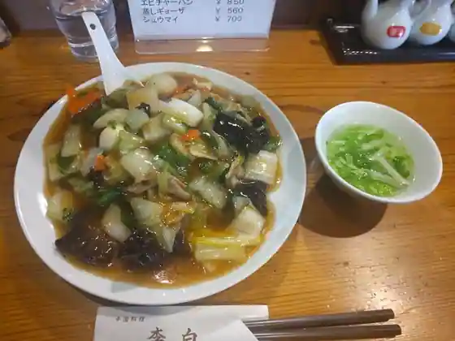
Rihaku
スパロー
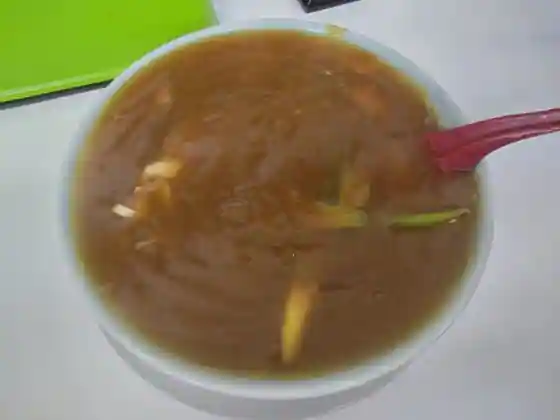
Suparo
洋食亭 いしくろ
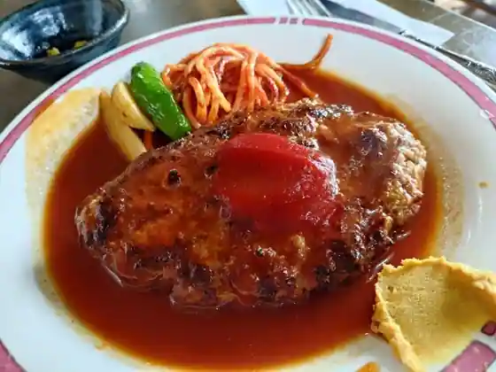
Yoshoku Tei Ishikuro
中国四川料理 熊猫
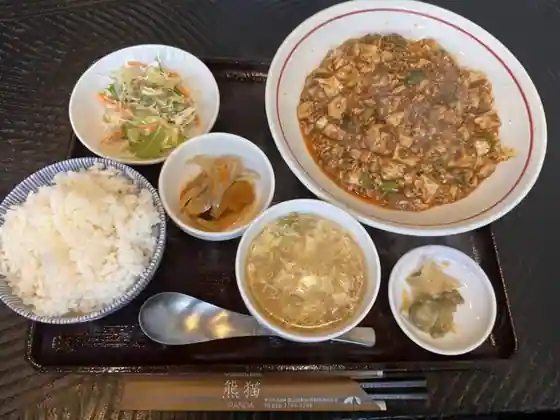
Chugoku Shisenryori Kumaneko
ラーメン 利助
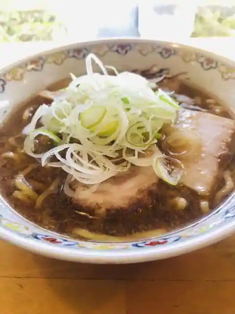
Ramen Risuke
イル コンパーニョ
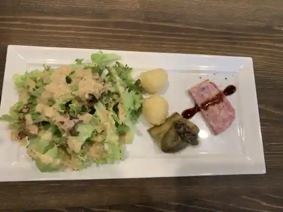
Iru Konpanyo
Sights
Shinminato Kittokito Market

Minato Hisashi Shi (Shinminato Kittokito City Jonai)

Shinminato Fishing Port no Hiru Seri Kengaku

AKAMA Toyama
Roadside Station Marugoto Imizu

Okigae Tokoro Uchikawa KIPPO Okigaetokoro Kippo
Banya Kafe
Uchikawa Sabo Gatsu to Usagi
Toyama Prefectural Daigaku Himawari Hatake
Adobencha Garden Imizu Adobencha Garden Imizu
Hojo Wakasa Ya
Shinminato O Kashi Tokoro no Village Ya
Suihen no Minka Hotel Kamome to Umineko
Kappo
Sakana Kan Kashi Ho
Nakagawa Mochi Mise
Shinminato Kani Koya
Engi Shikinai Kushita Shrine
Ban Ya no Sushi Kosugi Mise
Asahi Sushi
Naniwa Sushi
Sushitake
Sasazushi
Kiyoshi Sushi
Katsuhiro Sushi
Edo Ichi
Asuka I Akai
Shiro Ebi Ryo Kankosen
Maruei Seisakusho Kosugi Kojo
Shiroebi Ichiban Ya Tanabe Suisan
Imizu Kaijo Kanko
Uchikawa / Eiga (Jinsei no Yakusoku) Rogachi
Guriru Hayashi
Resutoran to Shio
Yoshoku Purovansu
Imizu Takeuchi Genzo Memorial Museum
Men Ya Iroha
Sankyo Tateyama Arumi Kojo
Hamayaki Ki Hamakaze (Shinminato Kittokito City Jonai)
Sogyo Bunsei Nananen Ryotei Naka Village Ro Sogyobunsei 7 Nen
Jun Sai Ai no Kaze
Nihonryori Shiosai
Kappo Matsuyama
Yugengaisha Hechima Sangyo
Shinminato Kankosen
Imizu Tobo (Takumi Village) Imizushitobo (Takumi no Sato)
Kaiomaru Park / Kaio Bado Park (Toyamashinko Rinkai Yacho Sono) Kaiomarupaku / Kaiobadopaku (Toyamashinkorinkaiyachoen)
Kenmin Park Taiko Yama Land
Toyamaken Kodomomirai Kan
Kenmin Koen Shinko Forest
Shinminato Mariina (Kairyu Marin Park) Shinminatomariina (Kairyumarinpaku)
Kamo Shrine (Shitaji Ku, Kyu Shita Village)
Imizu Oshima Ehon Kan
Imizu Kosugi Tenjikan
Imizu Shinminato Museum
Kosugi Maruyama Iseki Park (Asuka Kojin no Kan) Kosugimaruyamaisekikoen (Asukakojin no Yakata)
Suijo Tani Iseki
Nakayama Minami Iseki Park
Otsuka Burial Mound
Hojo Tsu Hachiman Shrine
Kushida Shin Iseki Park
Kusuri Kachi Teraike Park
Gyomin Yoshito Tsuka
Uchikawa
Toyamashinko Lookout
Kaiomaru Park / Hansen Kaiomaru / Shiawase no Beru Kekkonshiki / Shinminato Kankosen Kaiomarupaku / Hansenkaiomaru / Shiawase no Berukekkonshiki / Shinminatokankosen
Shinminato Bridge
Murata Tatami Seisakusho
Shinminato Sushi Juku
Imizu Yakusho